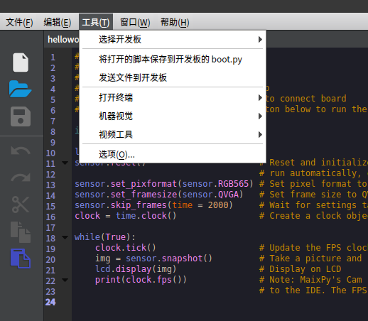

上传脚本到开发板
前面我们接触到了直接执行 pye("filename.py") 命令可以打开一个编辑器，可以直接编辑文件系统中的文件
但是慢慢我们会发现，这样的方法只适合用来改少量的代码，当代码量庞大或者我们需要高亮支持时，它就不适用了，我们需要在电脑上写完代码，然后上传到板子的文件系统里面
目前有以下几种方法：
1.1. 使用 MaixPy IDE 上传脚本到开发板
打开 MaixPy IDE， 连接开发板
编辑文件，然后在顶端Tool（工具）菜单中，点击将打开的文件保存为 boot.py 来将代码保存到开发板的boot.py文件，中，下次开发板开机上电会自动执行这个文件
当然也可以使用顶端Tool(工具)菜单中的发送文件功能来发送文件，会保存到开发板并且文件名和电脑上的文件名相同，（除了脚本也可以上传其它文件，不要太大）

2. 使用图形工具 uPyLoader 上传、运行脚本
uPyLoader 是一款开源软件，使用它可以方便地连接 MaixPy 并且上传、下载、执行文件，同时监控输出等等功能，功能比较完善
下载可执行文件:release

选择串口并点击 Connect 按钮来连接板子
第一次运行该软件需要初始化， 点击 File->Init transfer files 来完成初始化，这会在板子里创建两个文件，分别是 __upload.py 和 __download.py。
左边选中需要上传的文件，点击 Transfer 即可上传到板子的文件系统。
右边是板子里面的文件， 点击 List files 可以刷新文件列表， 选中 文件名， 点击 Execute 即可执行该脚本文件
点击上面的 View -> terminal 可以打开终端 用来查看运行时的输出或者发送命令
3. 使用工具 rshell
正如使用 linux 终端一样， 使用 rshell 的 cp 命令即可简单地复制文件到开发板
按照 rshell 项目主页的说明安装好 rshell
sudo apt-get install python3-pip
sudo pip3 install rshell
rshell -p /dev/ttyUSB1 # 这里根据实际情况选择串口
ls /flash
cp ./test.py /flash/ #复制电脑当前目录的文件 test.py 到开发板 flash 根目录
当然， 还有其它更多功能， 详情请访问其 项目主页
4. 使用命令行工具 ampy
ampy 是一个简单易用的命令行上传、下载、执行文件 的工具， 而且开源
注意这个工具是运行在电脑端的，而不是运行在板子上的
使用 ampy --help 来查看帮助信息
使用 ampy run file_in_PC.py 命令还可以不上传脚本到板子而是直接在板子上运行该脚本
5. TF 卡拷贝
拷贝到 TF 卡后， 在终端中执行 import 文件名 来运行脚本